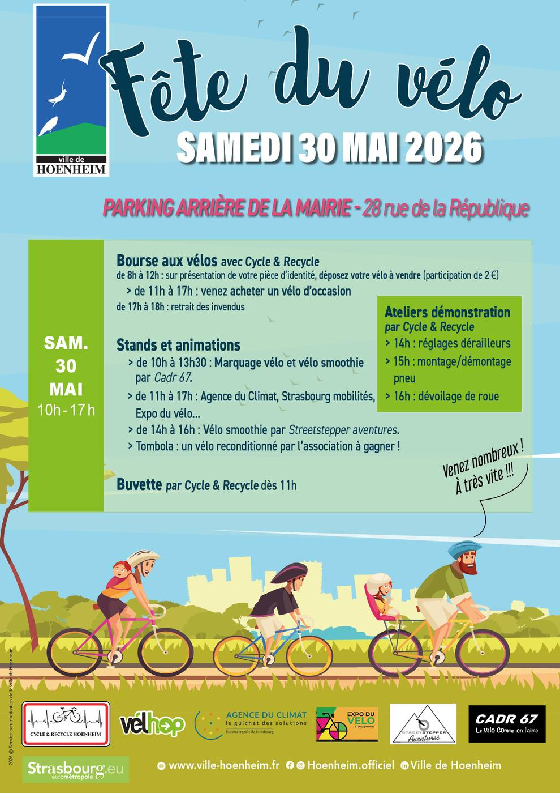

- Cet événement est terminé
Fête du vélo
30 mai à 10 h 00 min - 17 h 00 min
Navigation de l'événement

Le samedi 30 mai 2026 Hoenheim fête le vélo. Bourse aux vélos, stands, ateliers, animations, tombola, buvette, il y en aura pour tous les goûts.
Au programme :
Samedi 30 mai 2026 sur le parking arrière de la Mairie, 28 rue de la République à Hoenheim
Bourse aux vélos avec Cycle & Recycle
de 8h à 12h : sur présentation de votre pièce d’identité, déposez votre vélo à vendre (participation de 2 €)
> de 11h à 17h : venez acheter un vélo d’occasion
de 17h à 18h : retrait des invendus
Marquage vélo et vélo smoothie par Cadr67
> de 10h à 13h30 : un numéro unique sera gravé sur le cadre de votre vélo.
Stands
> de 11h à 17h : Agence du climat, Strasbourg mobilité, Expo du Vélo…
Ateliers démonstration par Cycle &Recycle : apprenez à entretenir votre vélo.
> 14h : réglages dérailleurs
> 15h : montage / démontage pneu
> 16h : dévoilage de roue
Vélo smoothie par Streetstepper aventures
> de 14h à 16h : pédalez pour réaliser de bons smoothies vitaminés.
Tombola
> un vélo reconditionné par l’association à gagner !
Buvette par Cycle & Recycle,
> dès 11h : buvette.
Plus d’informations :
Service animation
03 88 19 23 73
manifestations@ville-hoenheim.fr